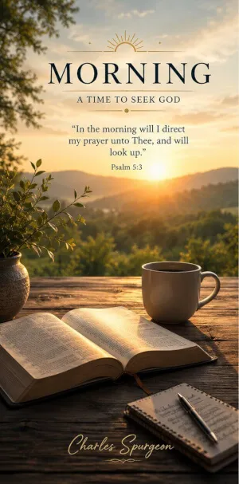

April 17 - Morning Devotion


Reader, have you come to the blood of sprinkling? The question is not whether you have come to a knowledge of doctrine, or an observance of ceremonies, or to a certain form of experience, but have you come to the blood of Jesus? The blood of Jesus is the life of all vital godliness. If you have truly come to Jesus, we know how you came--the Holy Spirit sweetly brought you there. You came to the blood of sprinkling with no merits of your own. Guilty, lost, and helpless, you came to take that blood, and that blood alone, as your everlasting hope. You came to the cross of Christ, with a trembling and an aching heart; and oh! what a precious sound it was to you to hear the voice of the blood of Jesus! The dropping of His blood is as the music of heaven to the penitent sons of earth. We are full of sin, but the Saviour bids us lift our eyes to Him, and as we gaze upon His streaming wounds, each drop of blood, as it falls, cries, "It is finished; I have made an end of sin; I have brought in everlasting righteousness." Oh! sweet language of the precious blood of Jesus! If you have come to that blood once, you will come to it constantly. Your life will be "Looking unto Jesus." Your whole conduct will be epitomized in this--"To whom coming." Not to whom I have come, but to whom I am always coming. If thou hast ever come to the blood of sprinkling, thou wilt feel thy need of coming to it every day. He who does not desire to wash in it every day, has never washed in it at all. The believer ever feels it to be his joy and privilege that there is still a fountain opened. Past experiences are doubtful food for Christians; a present coming to Christ alone can give us joy and comfort. This morning let us sprinkle our door-post fresh with blood, and then feast upon the Lamb, assured that the destroying angel must pass us by.